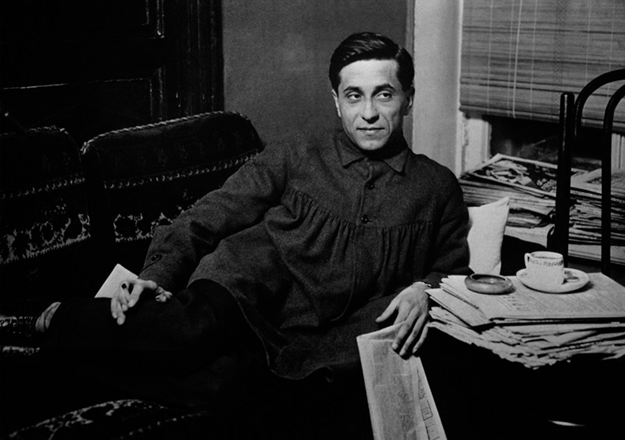

Mikhail Zoshchenko (1894-1958)
- Modernism - focus on language, use of skaz (Bakhtin would call it "double-voicedness" when the author's voice dominates the voice of the character); satire of New Soviet Man - the narrator; and instantiation of 1920s ornamentalist prose
- Modernism - ideology of alienation from traditional morality
- The narrator is a former peasant, former WWI veteran, who is trying to fit in and make sense of new Soviet urban life and benefit from it
- The narrator's speech is the major device - combines incompatible items and discourses; propaganda language (misued or mangled), street language of uneducated person, incorrectly used foreign words, absurd generalizations (bathhouses in America), language of denunciation (donosy)
- Narrator is usually first-person - subjectivity of displaced person
- Became famous when published Рассказы Назара Господина Синебрюхова (1921)
- Arrogant, uneducated narrator
- Distance between narrator and implied author - Laughter at expense of narrator
- Z. writes for the masses (also popular)
- South-Western school; Ukrainian
